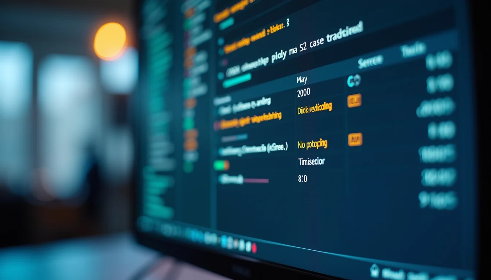

From the Bluzee archive. This article retains its original publication date and content; dated events, opportunities and product references should be read in that context.
When it comes to enterprise resource planning (ERP), SAP stands tall as a global leader. But have you ever wondered what makes SAP delivery in India so unique and effective? Today, we’re diving into the heart of SAP expertise in India to uncover how this vibrant ecosystem powers businesses, fresh graduates, and professionals alike. Whether you’re exploring ERP solutions or aiming to sharpen your skills, this post will guide you through the essentials of SAP delivery capabilities in India.
Why SAP Expertise in India is a Game-Changer
India has emerged as a powerhouse in the SAP landscape, thanks to its vast pool of skilled professionals and robust delivery models. The country’s IT infrastructure, combined with a culture of innovation and continuous learning, creates an environment where SAP projects thrive.
Here’s why SAP expertise in India stands out:
Cost-effective delivery without compromising quality.
Access to a large talent pool trained in the latest SAP technologies.
Strong focus on customer-centric solutions tailored to diverse industries.
Agile and scalable delivery models that adapt to business needs.
Continuous upskilling and certifications ensuring professionals stay ahead.
Imagine having a team that not only understands your business challenges but also crafts solutions that evolve with your growth. That’s the power of SAP delivery capabilities in India.
How SAP Delivery Models in India Drive Success
The delivery of SAP solutions in India is a well-oiled machine. It combines global best practices with local insights to ensure seamless implementation and support. Let’s break down the key components of these delivery models:
1. Onshore, Offshore, and Hybrid Models
India’s SAP delivery centers often operate in a hybrid model, blending onshore presence with offshore expertise. This means you get the best of both worlds:
Onshore teams handle client interactions, requirements gathering, and critical decision-making.
Offshore teams focus on development, testing, and support, leveraging cost advantages.
Hybrid models ensure continuous collaboration and faster turnaround times.
2. Agile and DevOps Integration
SAP projects in India increasingly adopt Agile methodologies and DevOps practices. This shift enables:
Faster delivery cycles.
Enhanced flexibility to accommodate changing requirements.
Continuous integration and deployment for smoother updates.
3. Industry-Specific Solutions
India’s SAP experts bring deep domain knowledge across sectors like manufacturing, retail, banking, and healthcare. This specialization helps tailor SAP modules to meet unique business needs, driving higher ROI.
4. End-to-End Support
From initial consultation to post-implementation support, Indian SAP delivery teams provide comprehensive services. This includes:
Business process analysis.
Custom development and integration.
Training and change management.
Ongoing maintenance and upgrades.
By leveraging these models, businesses can confidently navigate their digital transformation journeys.
What are L1, L2, L3, and L4 Processes in SAP?
Understanding the support structure in SAP delivery is crucial. The L1 to L4 process levels define how issues and tasks are managed, ensuring efficient problem resolution and service continuity.
L1 (Level 1) Support: This is the first line of defense. L1 teams handle basic queries, incident logging, and initial troubleshooting. They act as the primary contact point for users.
L2 (Level 2) Support: When issues require deeper technical knowledge, L2 teams step in. They perform detailed analysis, configuration changes, and minor fixes.
L3 (Level 3) Support: L3 involves expert-level intervention. These specialists handle complex problems, custom development, and integration challenges. They often collaborate with SAP product teams.
L4 (Level 4) Support: This level includes SAP’s own support and development teams. L4 is engaged for critical bugs, patches, and product enhancements.
This tiered approach ensures that problems are addressed efficiently, minimizing downtime and maximizing system performance.

How Businesses Benefit from SAP Delivery Capabilities in India
The impact of SAP delivery capabilities in India goes beyond just technology. It transforms how businesses operate, innovate, and compete. Here’s how:
Streamlined Operations
SAP solutions automate and integrate core business processes. Indian delivery teams customize these workflows to eliminate redundancies and boost efficiency.
Cost Savings
By leveraging India’s cost-effective delivery models, companies reduce their total cost of ownership without sacrificing quality or speed.
Faster Time-to-Market
Agile delivery and continuous support mean businesses can launch new products and services quicker, responding promptly to market demands.
Enhanced User Adoption
Training and change management are integral parts of SAP delivery in India. This ensures users embrace new systems, leading to higher productivity.
Scalability and Flexibility
Whether you’re a startup or a multinational, SAP solutions delivered from India can scale with your growth and adapt to evolving business needs.
Empowering the Next Generation: SAP Training and Career Growth in India
India’s SAP ecosystem isn’t just about delivering projects; it’s about nurturing talent. For fresh graduates and working professionals, this means exciting opportunities to build rewarding careers.
Comprehensive Training Programs
Many organizations and training institutes offer hands-on SAP courses covering modules like SAP S/4HANA, SAP FICO, SAP MM, and more. These programs combine theory with real-world projects.
Certification Pathways
SAP certifications validate your skills and open doors to global job markets. Indian professionals actively pursue certifications to stay competitive.
Internship and Entry-Level Roles
Entry points into SAP careers often start with internships or junior roles in Indian delivery centers. These experiences provide invaluable exposure to live projects.
Continuous Learning Culture
The fast-evolving SAP landscape encourages ongoing learning. Webinars, workshops, and online resources keep professionals updated on the latest trends.
By investing in your SAP skills, you position yourself as a valuable asset in the digital transformation journey.
Taking the Next Step with SAP Delivery in India
Ready to explore how SAP can revolutionize your business or career? The vibrant SAP delivery ecosystem in India offers unmatched expertise, innovative solutions, and a commitment to excellence.
Remember, tapping into sap delivery capabilities india means partnering with a network that understands your unique challenges and drives measurable results.
Let’s embrace the future of ERP together - streamlined, smart, and scalable!
We hope this deep dive into SAP delivery capabilities in India has sparked your curiosity and confidence. Whether you’re seeking ERP solutions or aiming to grow your SAP expertise, the opportunities here are vast and promising. Let’s keep pushing boundaries and creating value in the digital age!